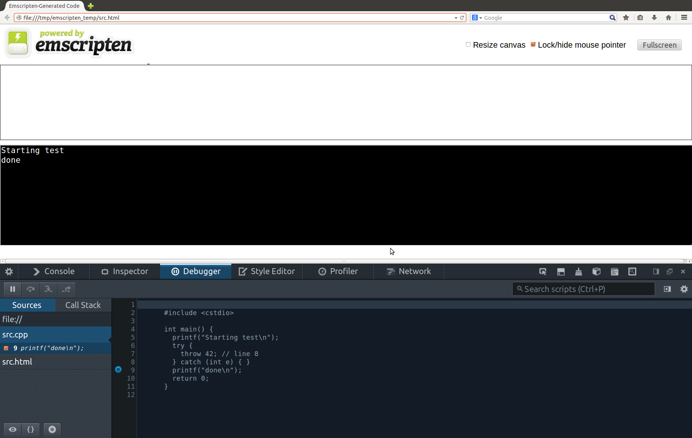
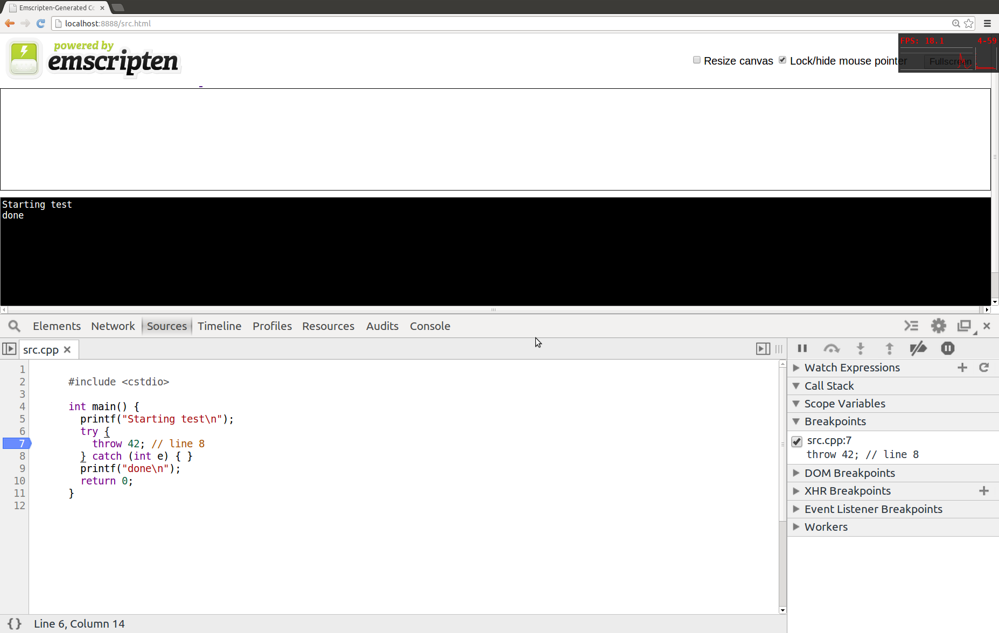

Compiling to the Web:
Getting Started With
asm.js and Emscripten
GDC 2014
Alon Zakai/@kripken, Luke Wagner

asm.js
A strict subset of JavaScript, the industry-standard language that runs in all web browsers
Designed to be very easy to optimize and run close to native speed
Emscripten
An open source compiler from C/C++ to asm.js
Uses LLVM and clang
Emscripten & asm.js let you run your C/C++ code in web browsers, at high speed, without plugins

Emscripten & asm.js:
Growing adoption
Unity
Unigine
Minko
Torque 2D
Godot
Unreal Engine
Nebula3
OpenFL
Cocos2D-X
Cube 2
etc.
It's pretty easy to run a C++
codebase on the web these days!
1. Use an engine that already supports Emscripten (Unity, Unreal, etc.)
2. Port your own in-house engine (IMVU, etc.)
Tools for this are open source, free, and mature
This is what I'll focus on - but even if you're using an engine someone else already ported, understanding how the underlying technology works is always useful!
And in 2nd half of the talk, Luke will get into detail about asm.js and performance
Ok, I have some C++ code.
What do I do?
Hello world
// helloworld.cpp
#include <stdio.h>
int main() {
printf("hello, world!\n");
return 0;
}
$ emcc helloworld.cpp
$ node a.out.js
hello, world!
Hello world
$ emcc helloworld.cpp -o output.html
$ ls output.*
output.html output.js
$ firefox output.html # or any other modern browser
When we run...
$ emcc helloworld.cpp -o output.html
...what actually happens?
We are running a cross-compiler: Generating code for another platform than the one you are currently on
Similar to developing a mobile game on a desktop!
Cross-compiling
Cannot use your system headers or libraries (they are OS-specific x86 binaries)
Code must be portable - no inline x86 assembly, etc.
Undefined Behavior
A possible issue with cross-compiling, for example:
char buffer[8];
int *i = (int*)&buffer[1]; /* unaligned! */
*i = 10;
This works on x86, can fail on ARM
JavaScript, like ARM, will not produce correct results
emcc SAFE_HEAP option makes debugging this easy
Undefined Behavior
Build your project with -Werror, can catch many things!
// src.c
int main() {
printf("hello, world!\n");
}
$ emcc src.c -Werror
error: implicitly declaring library function 'printf'
printf("hello, world!\n");
^
tests/hello_world.c:2:3: note: please include <stdio.h>
Event Loop
Code on the web must run in short events
Not returning control to the browser can lead to the dreaded "slow script dialogue" :(
Dialog boxes nicer today ;) but problem remains the same
Instead of this...
int main() {
init();
while (is_game_running()) {
do_frame();
}
return 0;
}
...We need this
#include <emscripten.h>
void do_web_frame() {
if (!is_game_running()) {
emscripten_cancel_main_loop();
return;
}
do_frame();
}
int main() {
init();
emscripten_set_main_loop(do_web_frame, 0, 0);
return 0;
}
Getting a Window, I/O, etc.
Emscripten supports a few C APIs for this:
HTML5, SDL, glut, glfw
Can use SDL, glut etc. for existing codebases
HTML5 is a good option for new codebases or if you know HTML5 already
html5.h
#include <emscripten.h>
#include <emscripten/html5.h>
int main() {
emscripten_set_canvas_size(1024, 768);
emscripten_set_keydown_callback(0, 0, 1, key_callback);
emscripten_set_main_loop(do_web_frame, 0, 0);
return 0;
}
SDL
#include <SDL.h>
#include <emscripten.h>
int main() {
SDL_Init(SDL_INIT_VIDEO);
SDL_Surface *screen =
SDL_SetVideoMode(1024, 768, 32, SDL_HWSURFACE);
emscripten_set_main_loop(do_web_frame, 0, 0);
/* use SDL_PollEvent to receive input etc. */
return 0;
}
Debugging
SDL, glut etc. are good to use because you can build the exact same code both to native and web
Can debug cross-platform issues normally on the native build
Debugging
For web-specific issues, can debug web builds directly
emcc has various levels of debuggability of generated code using the -g argument
Debugging
Optimized (-O2 and above) output is minified by default
function a(a,b){a=a|0;b=b|0;f(a+b|0);}
Debugging
-g1 : preserve whitespace
function a(a, b) {
a = a | 0;
b = b | 0;
f(a + b | 0);
}
Debugging
-g2 : preserve function names
function _addAndPrint(a, b) {
a = a | 0;
b = b | 0;
_printAnInteger(a + b | 0);
}
Debugging
-g3 (or just -g) : preserve variable names
function _addAndPrint($left, $right) {
$left = $left | 0;
$right = $right | 0;
_printAnInteger($left + $right | 0);
}
They will not always exactly match original variable names in source, but are often quite close
Debugging
-g4 : source maps
Show the C/C++ source code in your browser's debugger!
Works in Firefox, Chrome and Safari
Source Maps in Firefox
Source Maps in Chrome
Manual Debugging
Manual debugging works too, even easier than on native!
function _addAndPrint($left, $right) {
$left = $left | 0;
$right = $right | 0;
//---
if ($left < $right) console.log('l<r at ' + stackTrace());
//---
_printAnInteger($left + $right | 0);
}
Can add debug printouts that execute arbitrary JavaScript, show stack traces, etc.
Rendering: OpenGL
Best: The subset of OpenGL ES 2.0 that is parallel to WebGL :)
Basically ES 2.0 minus clientside data and a few other minor things
OpenGL Emulation Options
Ok: General OpenGL ES 2.0 including non-WebGL features (FULL_ES2 flag)
We emulate things like clientside data for you, adds some overhead
Bad: Older OpenGL 1.x stuff (LEGACY_GL_EMULATION flag)
Much works, but a lot doesn't, and emulation overhead is significant
OpenGL: summary
Use the WebGL-friendly subset of OpenGL ES 2.0
void do_web_frame() {
/* normal GLES 2.0 code, no clientside data */
glClear(GL_DEPTH_BUFFER_BIT);
glBindBuffer(GL_ARRAY_BUFFER, ab);
glBindBuffer(GL_ELEMENT_ARRAY_BUFFER, eb);
glVertexAttribPointer(1, 3, GL_FLOAT, GL_FALSE, 24, 0);
glUseProgram(p);
..
glDrawArrays(GL_TRIANGLE_STRIP, 0, n);
..
}
Fast, familiar, same code runs in native builds!
Now on to part 2!